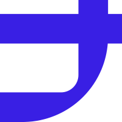

2024.09 — 2027.06
天津大学
建筑学 · 硕士在读（保送研究生）· 数字化设计工作室
- 研究方向：人机交互与数字化设计
- 核心课程：机器学习基础（92）、数据分析与数据挖掘（90）、图论（94）、研究方法论
- 学术成果：第一作者论文《基于折叠图形的城市实时互动装置研究》收录于 2025 计算性设计学术论坛

PORTFOLIO
可能是网络较慢，或当前浏览器的图形加速暂不可用。可以先刷新页面重试；如果仍无法启动，也可以直接查看项目详情。
UX 设计 / 产品经理
具备建筑学与数字化交互设计背景，关注人机协同、AIGC 生产流程与智能体交互。参与大模型 RAG 导购、图生视频工作台及 AI Agent 等项目，能够将复杂能力转化为清晰、可操作的产品体验，并推进设计从原型走向落地。
2024.09 — 2027.06
天津大学
建筑学 · 硕士在读（保送研究生）· 数字化设计工作室
2019.09 — 2024.07
天津大学
建筑学 · 本科（GPA 3.85/4.0，Top 10%）
2026.08 — 至今
知乎
产品体验设计实习生（AI 产品方向）
2026.06 — 2026.08
它石智航
UX 设计实习生（具身智能产品方向）
2026.01 — 2026.05
小红书
体验设计实习生（AI 产品方向）
2025.07 — 2026.01
宜家中国数字创新中心
体验设计实习生（AI 产品方向）
2026.09
2026.05
生活印诗机 · 小红书 Form 24H 黑客松 TOP 15
产品设计 & AI 原型开发 查看 Demo
AI Coding熟练使用 Codex 等 AI Coding 工具，可独立完成产品原型、前端 Demo 及内部效率工具开发。
语言CET-6（545） · 日语 JLPT N2